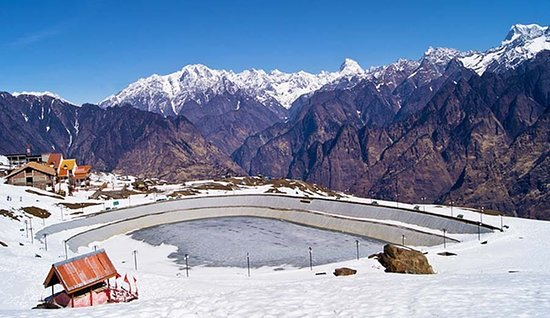
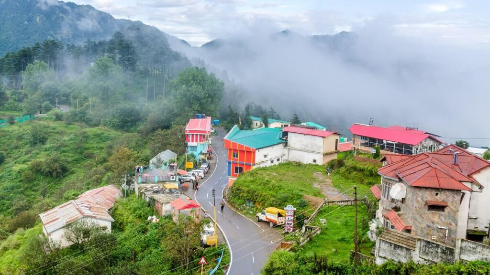
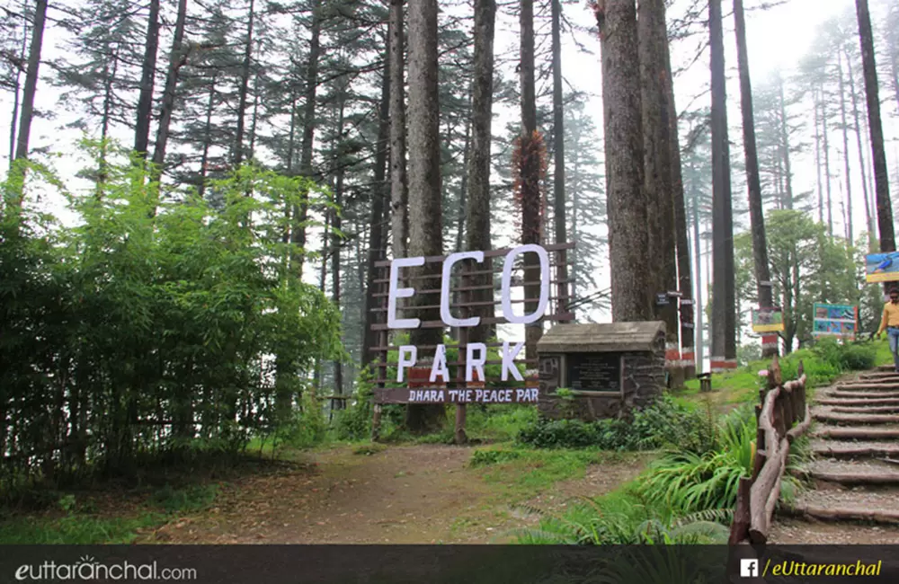
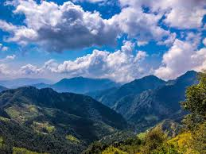
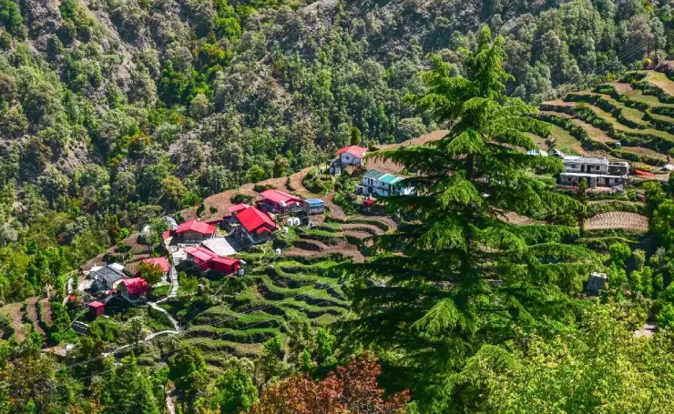
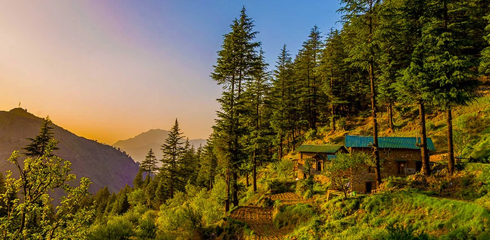
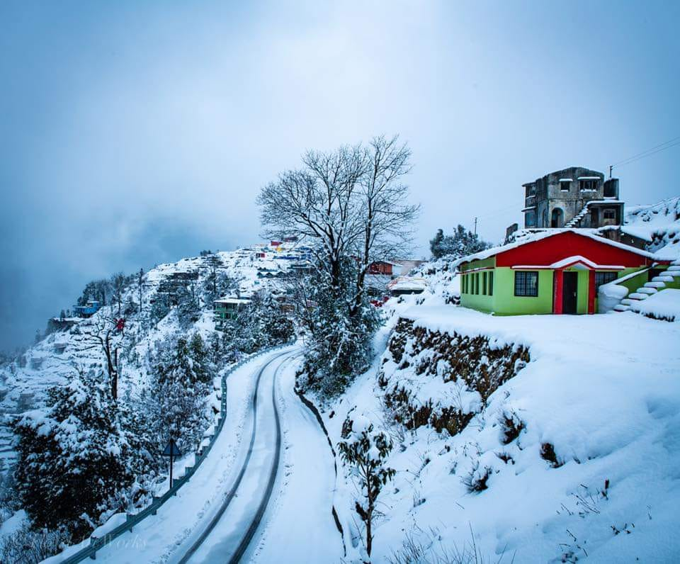
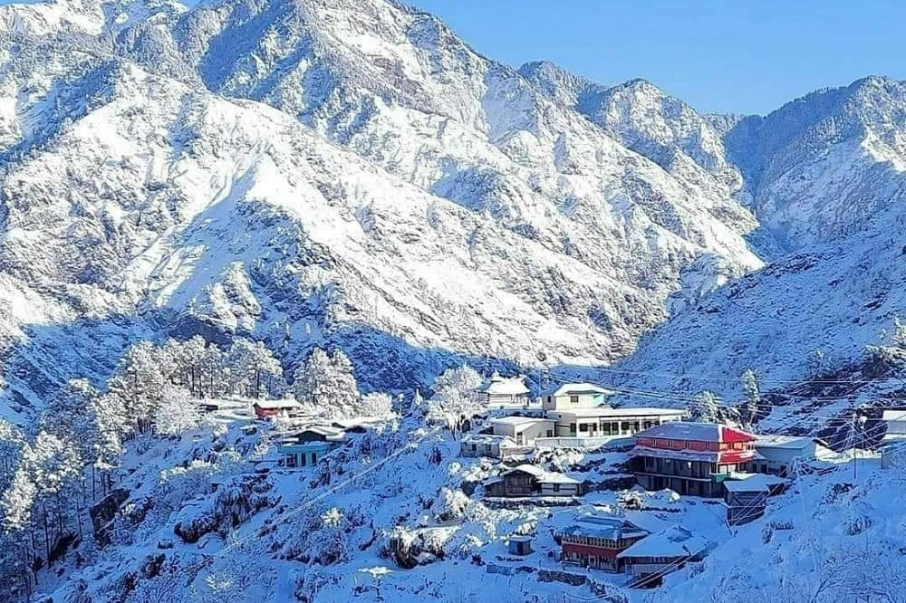

Dhanaulti, a hidden gem nestled in the Garhwal Himalayas of Uttarakhand, is a शांत और खूबसूरत hill station located at an altitude of around 2,286 meters. Surrounded by dense forests of deodar, oak, and rhododendron, this peaceful destination offers a refreshing escape from the crowded tourist hubs like Mussoorie. With its crisp mountain air, misty landscapes, and breathtaking views of snow-covered peaks, Dhanaulti is perfect for travelers seeking tranquility, nature, and a slow-paced retreat. Its untouched beauty and eco-friendly environment make it an ideal destination for relaxation and rejuvenation.
Apart from its natural charm, Dhanaulti is also known for its eco-parks, adventure activities, and panoramic viewpoints. Places like Eco Park (Amber & Dhara), Surkanda Devi Temple, and Potato Farm offer unique experiences ranging from spiritual vibes to scenic walks. During winters, Dhanaulti transforms into a magical снежный wonderland with snowfall covering the entire region, attracting tourists for snow activities and cozy mountain stays. Whether you're looking for adventure, photography, or simply peace, Dhanaulti provides a perfect blend of all.
March to June offers pleasant weather (15–25°C) for sightseeing and nature walks; September to November brings clear skies and stunning Himalayan views. December to February is perfect for snowfall lovers, turning Dhanaulti into a snowy paradise. Avoid heavy monsoon months (July–August) due to slippery roads and landslides.
Eco Park (Amber & Dhara) for peaceful forest walks, Surkanda Devi Temple trek for spiritual and panoramic views, Potato Farm for scenic photography, camping & bonfire experiences, zip-lining and skywalk adventures, and mesmerizing sunrise-sunset viewpoints — perfect for relaxation, trekking, and nature exploration.
Carry warm clothes even in summer due to cool climate, wear comfortable shoes for trekking and walking, book stays in advance during peak and snowfall season, prefer early morning travel for clear views, and maintain cleanliness in this eco-sensitive zone — respect nature and avoid plastic usage.
"In the quiet embrace of whispering pines and drifting clouds, Dhanaulti offers a pause from the chaos of life — a place where every breath feels pure, every view feels eternal, and the soul finds calm in nature’s gentle silence."